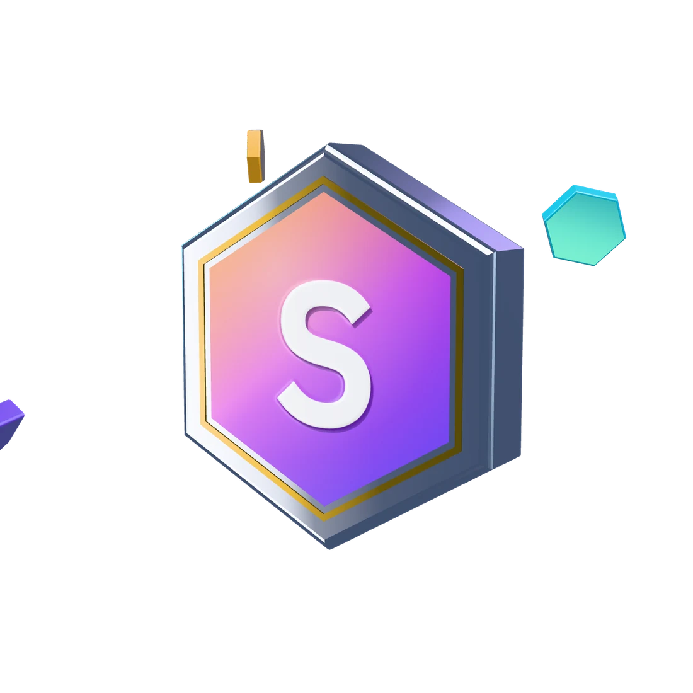

arcus.log_ □ x
arcus
- 45d volume
- $1,203,305
- fills
- 22,825
- maker
- 79.8%
- points owner-stated
- 22
gm anon
nine bots. perp volume, take-profit ladders, a youtube bot that uploads on its own. every number on this page is dated and linked to the post it came from. no wallets, no balances, no pnl, no keys. $STARKBOT is not issued yet.

drag the coin. it spins. very utility.
wagmi
ngmi (if you don't read)
$STARKBOT is the coin for the desks. it is not issued. no price, no contract, until the address is posted here and on @StaRKCryptoBots the same day. anything else is a scam, ngmi.
Coming at launchcopy turns on when the contract is published here.
period: 2026-09-17 to 2026-10-17 · points are owner-stated · unknown numbers say "tracking soon", we don't make stuff up
figures read from data/stats.json. full desk board
01 · Perp volume farm
Trades a perpetuals exchange around the clock to build volume for points programs. It aims to quote as a maker, so most fills come from resting orders instead of crossing the spread.
$1,203,305 45d volume · 22,825 fills · 79.8% maker · 22 pts (owner-stated)
02 · Perp volume farm
The same volume-farm idea pointed at the Nado exchange. It keeps orders small and mostly passive so the cost of farming stays low.
$309,591 45d volume · 1,661 fills · 84.2% maker · 52 pts (owner-stated)
03 · Order-book desk
An order-ladder desk for the Lighter venue. It lays out a ladder of orders and adjusts it as price moves.
169 trades lifetime · $960,000 volume · 43.86 pts (lifetime, owner-stated, Oct 21, 2026)
04 · Multi-chain 2× take-profit
Watches positions across several chains and takes profit in steps once a position has doubled, so gains are not left to chance.
9 take-profit sells · 1 token watched
05 · Media bot
A channel bot that makes and uploads videos on its own, from idea to publish, with no one clicking in between.
6.1K views · 29.2 watch hours · 15 subs (owner-stated)
06 · Media bots
A pair of media characters that publish content for the StaRK feed, running on the same hands-off loop as the video bot.
stats: tracking soon
07 · Operator assistant
The helper that keeps the other bots running. It watches their status and nudges them when something looks off.
stats: tracking soon
08 · Plumbing bot
Sits between the bots and the services they call. It routes requests and retries or repairs them when a call fails.
stats: tracking soon
09 · Execution bot
The execution worker that turns a chosen plan into orders, inside limits the owner sets.
stats: tracking soon
looks like the desk, not a live fill.
OCT 17, 2026
run automatically for 30 days.
OCT 2, 2026
200+ videos in a week, made by the bot by itself.
not financial advice. these are the owner's own reported results for a short window. past results do not predict future results. points have no guaranteed value and may be worth nothing. do your own research.
[x] 30-day arcus + nado run, results posted and linked
[x] youtube bot shipping on its own, 200+ videos in week one
[~] live desks stats: a script refreshes data/stats.json
[ ] stats for every desk: lighter rh, profit taking, media bots
[ ] $STARKBOT launch: contract posted here and on x on launch day
[ ] more desks and bots, once the current ones are steady
no. not issued, no price, no contract. when that changes the address shows in the launch section and on @StaRKCryptoBots.
from one file, data/stats.json, updated oct 21, 2026: arcus and nado cover 45 days (sept 6 to oct 21), lighter rh is lifetime (trades from the desk journal; volume and points owner-stated oct 21, 2026). combined volume and points mix windows and are labeled. a script is meant to refresh it. some extra numbers are owner-reported and labeled. unknown ones say "tracking soon".
points and youtube numbers are not read from a chain by this site. they are what the owner reported, so they're labeled.
the share of volume that came from resting orders (adding liquidity) instead of orders that took liquidity.
no. never wallets, balances, equity or pnl, and it holds no keys.
no. it's the owner's own estimate of what the points could fetch OTC. not a guarantee, may be worth less, may be worth nothing.
no trackers, no third-party requests, all fonts and art self-hosted. only your sound on/off choice is saved in your browser.
browsers block sound until you interact. it fades in softly after your first tap or key press, and the sound button mutes it.
maybe. try the konami code. or click the logo a few times. we're not telling.